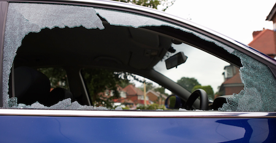
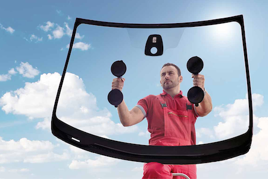
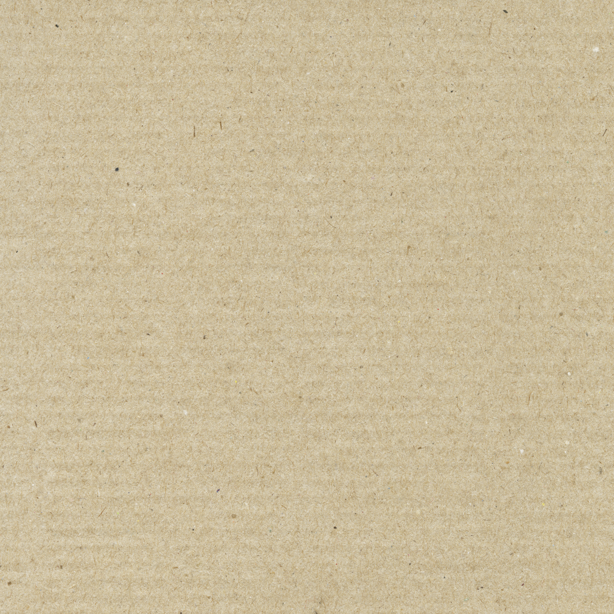
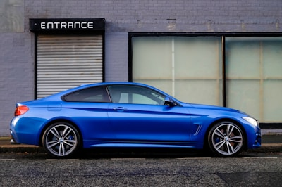
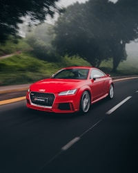

Car Glass Replacement in Compton Call Today

Auto Glass and Windshield Replacement in Compton area
Mobile Car Window Glass Replacement in Compton and more
Auto Glass Replacement
We cover the city of Compton and all nearby area. Looking to get a auto glass repair in Compton or other city around the area. Give us a call today. We have been in the auto glass industry for more than 10 years. We have the knowlage and experience to provide you with a quality windshield or car glass replacement service. Our mobile units are able to come to your place and do the installation at you home or office.
Mobile car glass replacement service in Compton area and more. Are you looking for auto glass repair in Compton or nearby city? We cover the city of Compton and many more. Talk to us and book your appointment today. Same day service available when part is in stock. Our auto glass specialist area here pro vide you very important information about the price, time available and windshield replacement process.
Auto Glass Replacement and Windshield Replacement in Compton, California Auto glass replacement and windshield replacement are essential services that vehicle owners often need. Auto glass may crack or shatter due to various reasons, like road debris, weather conditions, accidents, or vandalism. A cracked or damaged windshield not only impairs vision but can also compromise the structural integrity of the vehicle. Therefore, it's crucial to get timely auto glass replacement and windshield replacement services. In Compton, California, our auto glass replacement services can provide you with the necessary services for all types of auto glass replacements. At our company, we specialize in mobile auto glass in Compton, California, windshield replacement in Compton, California, mobile car glass in Compton, California California, and other related services. Over the years, we have built a reputation for our prompt and reliable services, and we are well-known for our high standards of quality and safety. Our team of experts is equipped with the latest tools and techniques to offer the best auto glass and windshield replacement services. We have over 10 years of experience in the industry, and our technicians are well-trained and skilled in all types of auto glass replacement and windshield replacement services. Our competitively priced services come with a lifetime warranty, and we work with all types of vehicles, including cars, trucks, SUVs, and vans. We offer free mobile services, which means that our technicians can come to your location to replace or repair the auto glass or windshield. We know that you have a busy schedule, which is why we aim to offer convenient mobile services to make it easier for you. Our fully equipped mobile units have all the necessary tools, including vacuum cleaners, so we can remove any shattered glass fragments from your vehicle. We use safety laminated windshields and tempered glass windows to ensure your safety while driving. Our windshield replacement service meets or exceeds the industry safety standards. We use premium quality glass and OEM equivalents, which means that the auto glass or windshield we use is of the same quality as the original one, and you can trust that it will last for a long time. We specialize in rain-sensing windshields and lane departure warning system windshields, which are essential safety features in modern vehicles. Rain-sensing windshields use sensors to detect rain and adjust the speed of the windshield wipers to ensure clear visibility while driving in rainy conditions. A lane departure warning system windshield uses sensors to detect when the vehicle is crossing the lane without a turn signal. It alerts the driver to take corrective action. In conclusion, our auto glass replacement and windshield replacement services in Compton, California, are characterized by convenience, quality, and safety. Our commitment to excellent service has earned us a loyal customer base, and we hope to serve you as well. If you need any auto glass replacement or windshield replacement services, give us a call today, and we will provide you with a free quote. Remember, we provide mobile auto glass in Compton, California, windshield replacement in Compton, California, mobile car glass in Compton, California California, auto glass in Compton, California, auto glass replacement in Compton, California, mobile windshield replacement in Compton, California, and car glass in Compton, California.




Give us a call — we're happy to answer any questions.
Call Now · (424) 240-8584